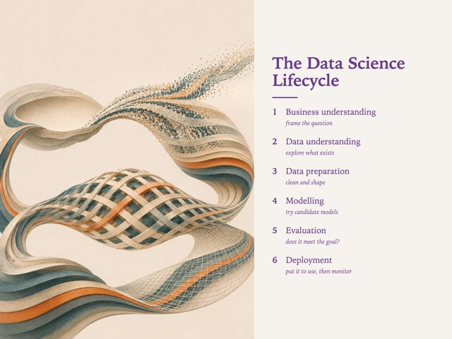
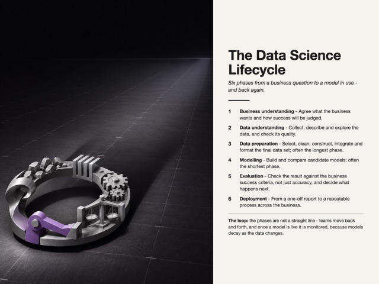
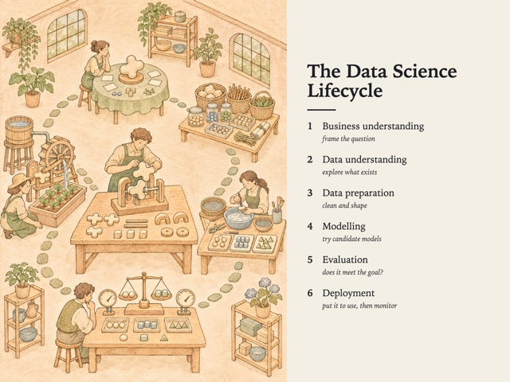
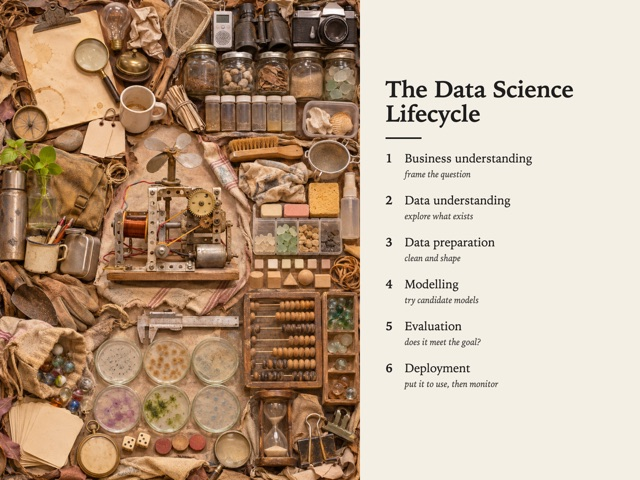
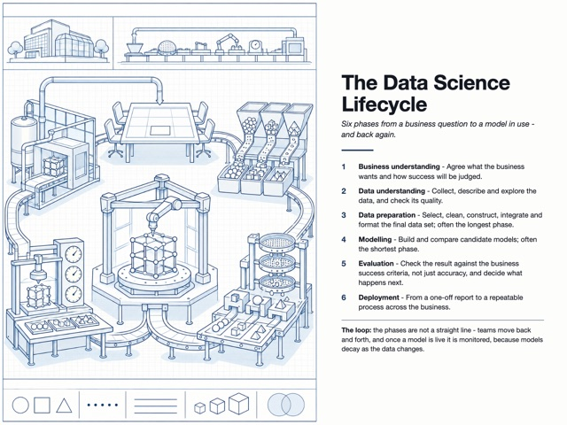
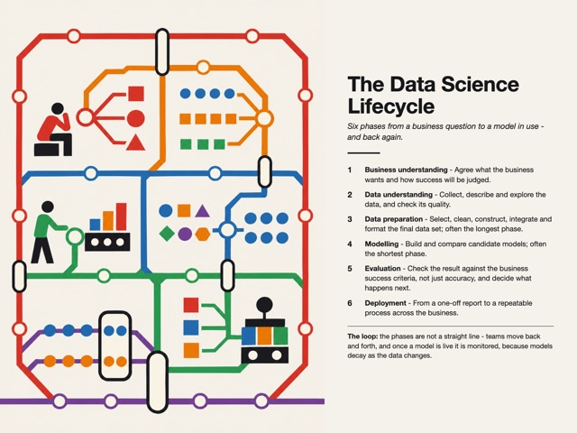
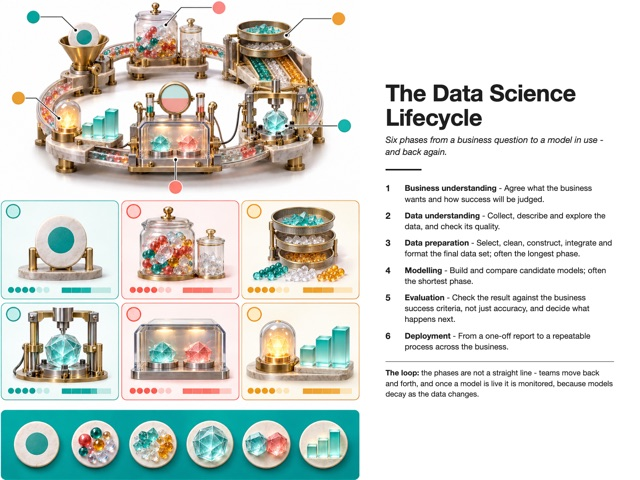
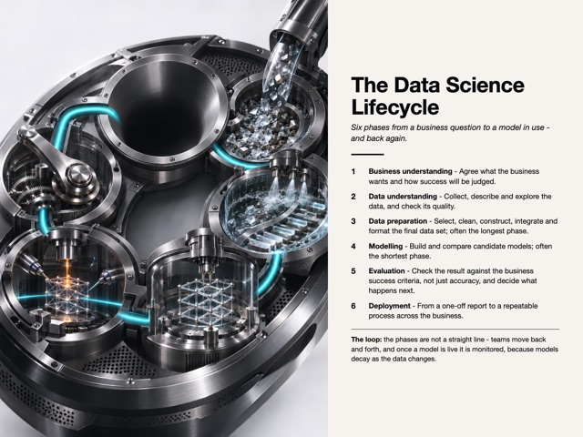
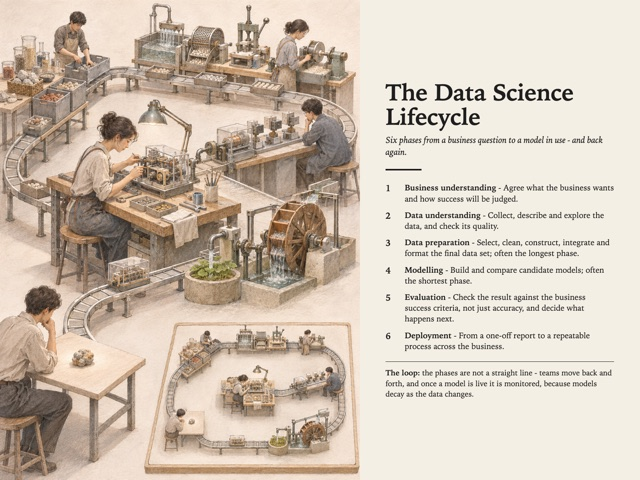
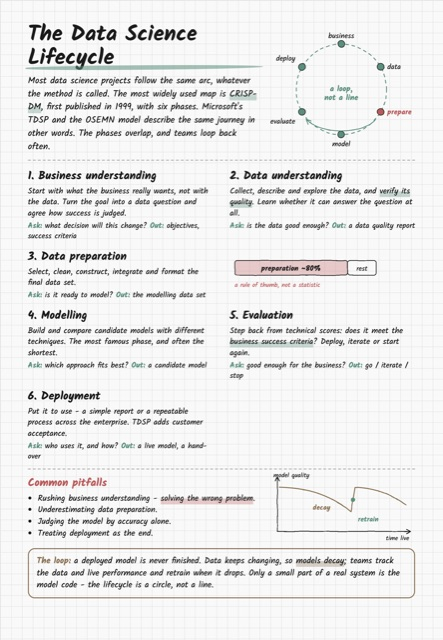

Style Vault / Category / Infographic
Infographic 11
Composite explanatory graphics - data + illustration + hand-set text.











| Style | Audience | Category | Formats | Own work |
|---|---|---|---|---|
| Data Strata (her unfair advantage) SV-002 | Board | Data viz, Infographic, 3D / Spatial | diagram, infographic, deck | yes |
| Measured Object Shadow SV-023 | Board | Data viz, Infographic, Graphic design | data-portrait, infographic, deck | yes |
| Catalogue Axonometric SV-030 | Board, Creative | Infographic, 3D / Spatial | diagram, field-guide, infographic | yes |
| Everything Drawer SV-032 | Creative | Infographic, Illustration | field-guide, annotated, poster | yes |
| Blueprint Ledger SV-033 | Board | Infographic, Data viz, Graphic design | diagram, annotated, infographic | yes |
| Transit Map (Vignelli) SV-035 | Board | Data viz, Infographic, Graphic design | map, diagram | yes |
| Clinical Data Card SV-036 | Board | Infographic, Data viz, Illustration | card, data-portrait, infographic | yes |
| Aged Specimen Plate SV-037 | Board, Creative | Illustration, Infographic, Fine art | field-guide, infographic, poster | yes |
| Dark Spec Poster SV-038 | Bold | Graphic design, Photography, Infographic | poster, infographic, deck | yes |
| Unit Translation SV-055 | Board, Bold | Data viz, Infographic | diagram, annotated | yes |
| Studygram Notes SV-078 | Creative | Infographic, Typography, Illustration | cheatsheet, annotated, deck | yes |
No style matches.